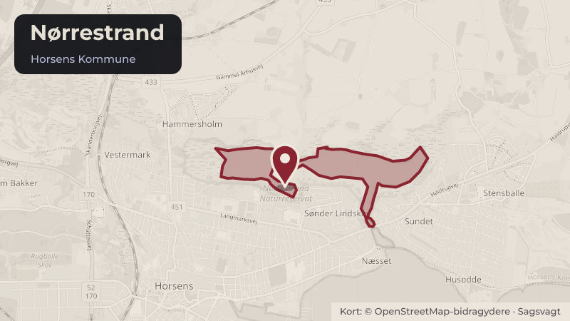

Besluttet 25. august, Byrådet, Horsens
ØK Skema B til 15 boliger i botilbud, Nørrestrand
Byrådet godkendte den 26. maj 2026 skema A til opførelse af 15 almene ældre- og handicapvenlige boliger på Nørrestrand. Andelsboligforeningen ALBO ansøger nu om godkendelse af skema B til projektet. Sagen afgøres af Byrådet.
BoligerÆldre og sundhedDet socialeKultur og fritid
Steder i sagen: Nørrestrand

Kort fortalt
- Hvem
- Byrådet, Horsens Kommune
- Hvornår
- Tirsdag 25. august 2026
- Status
- Besluttet. Byrådet vedtog indstillingen fra Økonomi- og Erhvervsudvalget.
Læs hele sagen Kommunens egen tekst
Indstilling
Direktionen indstiller, at
1. Byrådet godkender skema B vedrørende opførelse af 15 almene familieboliger med
en samlet udgift på 35.133.000 kr.
2. Byrådet godkender optagelse af et støttet lån på 30.917.000 kr. til delvis finansiering
af udgifterne.
3. Byrådet godkender ydelse på 60 % til kommunal garanti, svarende til 18.550.000 kr.
4. Byrådet godkender tillæg til anlægsbevilling og rådighedsbeløb på 46.000 kr. til
grundkapitalindskud til Landsbyggefonden på projektet, som finansieres af puljen til
indskud i Landsbyggefonden.
5. Byrådet godkender huslejestørrelsen.
6. Byrådet godkender anlægsudgifter til serviceareal.
Sagsfremstilling
A/B Albo har sendt en anmodning om godkendelse af skema B vedrørende 15 almene ældreog handicapboliger med tilhørende serviceareal. Boligerne skal opføres på Nørrestrand. Der
opføres 15 stk. 2-rums boliger på 85 m2.
Horsens Byråd godkendte den 26. maj 2026 skema A for opførelsen af boligerne og tilhørende
serviceareal. Der blev givet anlægsbevilling med tilhørende rådighedsbeløb på kr. til indskud i
Landsbyggefonden.
Licitationen er en totalentreprise i offentligt udbud og anskaffelsessummen kan opgøres
således:
Skema A
Skema B
Inkl. moms
Inkl. moms
Anskaffelsessum
34,672 mio.kr.
Støttet lån
Opførelse af 15 boliger
Kommunal garanti
Forskel
Den del der overstiger
60% af ejendommens
værdi v. afslutning
Kommunal grundkapital
3,467 mio. kr.
3,513 mio. kr.
Beboerindskud 2%
0,693 mio. kr.
0,703 mio. kr.
Husleje i kr./ m2/år
9 kr.
Serviceareal
Maksimumsbeløbet til opførelse af almene ældre- og handicapvenlige boliger i området udgør
31.230 kr./ m2. Efter licitationen udgør beløbet pr. m 2 31.229 kr.
Udgiften finansieres delvis ved optagelse af et realkreditlån på 30,917 mio. kr. og et kommunalt
grundkapitallån på 3,513 mio. kr. den resterende del bliver finansieret med beboerindskud på
Den foreløbige beregning fra realkreditinstituttet viser en kommunal garanti på lånet på 60 %
svarende til 18,550 mio. kr. Den kommunale garanti kan ikke opgøres endeligt før byggeriet er
opført. Når byggeriet er opført og vurderet, opgøres garantien på baggrund af ejendommens
værdi(markedsværdi).
Driftsbudgettet viser, at huslejen vil være på 1514 kr./m 2/år. Huslejen vil i gennemsnit udgøre
9.463 kr./måned. Hertil kommer forbrug for vand, varme og el.
Serviceareal
Ved opførelse af almene ældreboliger er det kommunen, der afholder udgifterne til etablering
af de tilhørende servicearealer. Servicearealerne finansieres således ikke som en del af
ældreboligbyggeriet, men opføres og betales af kommunen i overensstemmelse med reglerne
om almene ældreboliger.
Skema A: Tilsagn om støtte til opførelse eller renovering af almene boliger
Skema B: Godkendelse af anskaffelsessum og påbegyndelse af byggeriet
Skema C: Godkendelse af byggeregnskabet og endelig anskaffelsessum
SAWE/MRB
Historik
Beslutning fra Økonomi- og Erhvervsudvalget, den 18. august 2026.
Økonomi- og Erhvervsudvalget tiltrådte indstillingen.
Beslutning
Byrådet vedtog indstillingen fra Økonomi- og Erhvervsudvalget.
Anja Kjærhus deltog ikke i mødet.
Kilde: Horsens Kommune, Byrådet, referat fra mødet tirsdag 25. august 2026, punkt 9. Læs den originale sag hos kommunen.